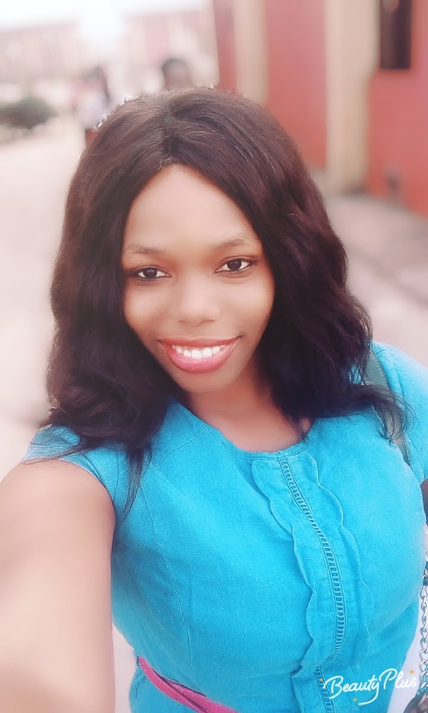

ROZYMACASSY'S
WEBPAGE
About Me
l am NWACHUKWU CHINENYE ROSEMARY from Imo state in Nigeria, I don't
have a conventional background for a developer.
it was after my diploma in SLT(Microbiology) that I realized I was fascinated by computer science, so I had to make research for scholarship on programming.
At first, I was worried alot whether I had the right sort of brain for programming, or whether it was a good idea to change career later in life.
Currently I am a youth corper serving in an IT firm and
an online Frontend Development intern at Zuri. I look forward to being a better frontend Developer at the end of this training.

Rozymacassy
Hobbies
- Reading
- Learning New Skills
- Singing
- Dancing
- Traveling
- Cooking
Priorities
- My Life's Mission
- Physical Health
- Quality Time with Families and Friends
- Healthy Relationship
- Finances
- Self Improvement
Skils
- Video Editor and Graphic Designer
- Data Analyst
- Excellent interpersonal communication skill
- Strong analytical and working skills
- Excellent organizational skills
- Highly Proficient in Computer applications like: Corel Draw , Corel Paint , MS Word , PowerPoint , Excel.
- Good Problem Solving Skills